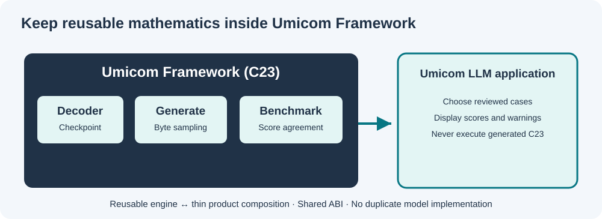

Level: intermediate | Time: 30 minutes | Prerequisites: Lessons 23–27, basic C23 and CMake
Two repositories, one authoritative implementation
Our source tree separates reusable libraries from applications. The reusable benchmark is in Umicom Framework; the Umicom LLM module is a thin consumer that loads a reviewed checkpoint, submits reviewed cases and displays Framework results.
C:\umicom\Umicom-Applications\
framework\
include\umicom\ai\training\benchmark.h
src\ai\training\benchmark.c
applications\llm\
src\console\benchmark_main.c
The LLM module is a Git submodule. Commit its new console to that module's repository, not just to the parent Umicom-Applications repository.
The native C23 application remains small
The essential application operation is an ordinary Framework call:
UmiAiTrainingBenchmarkReport report;
UmiAiTrainingBenchmarkCaseResult rows[3];
UmiAiTrainingSamplingOptions sampling = {1.0F, 1U};
UmiStatus status = UmiAiTrainingBenchmarkRun(
decoder, cases, 3U, &sampling, UINT64_C(20261022),
rows, 3U, &report);
The application does not contain a new tensor operator, softmax, tokenizer, SGD or AdamW implementation. It does not execute, compile, save or trust the generated completions.
The sample cases live in applications/llm/src/console/benchmark_main.c. They demonstrate a source-completion interface; they are not an independent hidden competency benchmark and should not be used to advertise C23 expertise.
Why the console is opt-in
The LLM application already has other functionality. The new CMake option defaults to OFF, preserving normal builds:
UMICOM_LLM_BUILD_NATIVE_BENCHMARK=OFF
When enabled in a parent Umicom Applications build, it composes the already existing Framework native training module and builds umicom-llm-benchmark. The standard umicom-llm-console remains unchanged.
Build and run on Windows
First build the focused Framework library and tests, as in Lesson 26. A complete Umicom Applications build requires the Framework's existing CMake presets and a working MSYS2 UCRT64 environment.
Set-Location "C:\umicom\Umicom-Applications"
$env:Path = "C:\msys64\ucrt64\bin;$env:Path"
cmake --preset windows-ucrt64-all-debug `
-DBUILD_TESTING=ON `
-DUMICOM_LLM_BUILD_NATIVE_BENCHMARK=ON
cmake --build --preset windows-ucrt64-all-debug `
--target umicom-llm-benchmark --parallel 2
Use a trained, approved native byte-decoder checkpoint created by the Framework experiment programme. Replace <path-to-approved-checkpoint> below with an actual locally reviewed path:
& ".\build\windows-ucrt64-all-debug\bin\umicom-llm-benchmark.exe" `
"<path-to-approved-checkpoint>"
Build layout note: the executable directory is determined by the active CMake runtime-output settings. Inspect the build output if your preset places it elsewhere. Never disable Windows security to make a test pass.
Run an approved benchmark suite
To compare a saved decoder with the supplied teaching suite, pass a second argument to the opt-in console:
& ".\build\windows-ucrt64-all-debug\bin\umicom-llm-benchmark.exe" `
"<path-to-approved-checkpoint>" `
".\framework\learning\native-llm\fixtures\benchmark-reviewed.txt"
The console delegates suite parsing to UmiAiTrainingBenchmarkSuiteLoadFile() and scoring to UmiAiTrainingBenchmarkRun(). It prints the result for every named case, including failures. The programme does not execute, compile or publish generated code.
The suite format is intentionally straightforward: one approved identifier plus hex-encoded prompt and expected completion per line. This avoids ambiguous C-string escaping while preserving arbitrary bytes. Review every reference before treating the run as independent evaluation evidence.
Read results responsibly
The console prints the number of completed training steps, each case's exact/positional/prefix agreement, and totals. If the elementary decoder matches none of the snippets, that is a valid observed outcome. It shows a weak baseline, not a broken benchmark.
The runner holds its score data locally until every case succeeds. Invalid options, unsupported vocabulary or insufficient result capacity return a status without publishing partial results.
Your design review exercise
A proposed change adds a second Softmax() implementation inside applications/llm/src/console/. Should it be approved?
Recommended review finding
No. The canonical C23 native generation and sampling functionality already belongs to Umicom Framework. Extend or test the Framework service instead; applications should use its public ABI and provide only the necessary presentation, input selection and user consent handling.
Next engineering milestone
Develop a reviewed external benchmark-manifest format and an isolated, explicitly authorised compiler-and-unit-test assessment service. It must record toolchain versions, prevent training-data leakage and never execute generated source within the normal application process.